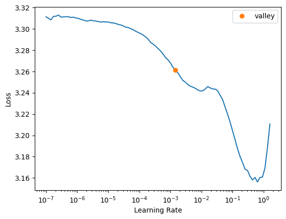
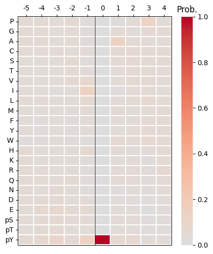
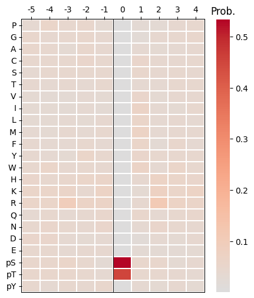
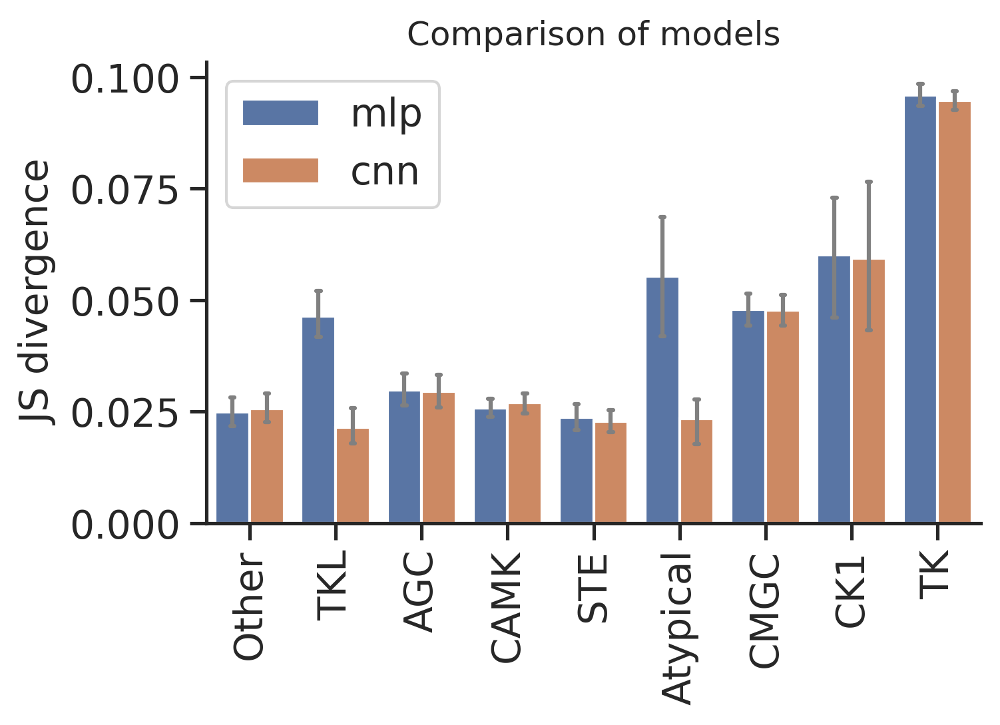

import numpy as np, pandas as pd
import os, random
from katlas.data import *
from katlas.train import *
from fastai.vision.all import *
from katlas.dnn import *DL training
Setup
seed_everything()def_device'cuda'Data
df=pd.read_parquet('train/pspa_t5.parquet')info=Data.get_kinase_info()
info = info[info.pseudo=='0']
info = info[info.kd_ID.notna()]
subfamily_map = info[['kd_ID','subfamily']].drop_duplicates().set_index('kd_ID')['subfamily']
family_map = info[['kd_ID','family']].drop_duplicates().set_index('kd_ID')['family']
group_map = info[['kd_ID','group']].drop_duplicates().set_index('kd_ID')['group']
pspa_info = pd.DataFrame(df.index.tolist(),columns=['kinase'])
pspa_info['subfamily'] = pspa_info.kinase.map(subfamily_map)
pspa_info['family'] = pspa_info.kinase.map(family_map)
pspa_info['group'] = pspa_info.kinase.map(group_map)df=df.reset_index()df.columnsIndex(['index', '-5P', '-4P', '-3P', '-2P', '-1P', '0P', '1P', '2P', '3P',
...
'T5_1014', 'T5_1015', 'T5_1016', 'T5_1017', 'T5_1018', 'T5_1019',
'T5_1020', 'T5_1021', 'T5_1022', 'T5_1023'],
dtype='object', length=1255)# column name of feature and target
feat_col = df.columns[df.columns.str.startswith('T5_')]
target_col = df.columns[~df.columns.isin(feat_col)][1:]feat_colIndex(['T5_0', 'T5_1', 'T5_2', 'T5_3', 'T5_4', 'T5_5', 'T5_6', 'T5_7', 'T5_8',
'T5_9',
...
'T5_1014', 'T5_1015', 'T5_1016', 'T5_1017', 'T5_1018', 'T5_1019',
'T5_1020', 'T5_1021', 'T5_1022', 'T5_1023'],
dtype='object', length=1024)Split
pspa_info.subfamily.value_counts()subfamily
Eph 12
Src 11
NEK 10
CK1 7
STE11 7
..
ZAK 1
Sev 1
Ret 1
Musk 1
Tie 1
Name: count, Length: 149, dtype: int64pspa_info.family.value_counts()family
STE20 27
CAMKL 20
CDK 17
MAPK 12
Eph 12
..
STK33 1
Sev 1
Ret 1
Musk 1
Tie 1
Name: count, Length: 92, dtype: int64pspa_info.group.value_counts()group
TK 78
CAMK 57
CMGC 52
AGC 52
Other 49
STE 39
TKL 25
CK1 11
Atypical 5
Name: count, dtype: int64splits = get_splits(pspa_info, group='group',nfold=9)
split0 = splits[0]GroupKFold(n_splits=9, random_state=None, shuffle=False)
# group in train set: 8
# group in test set: 1Dataset
# dataset
ds = GeneralDataset(df,feat_col,target_col)len(ds)368dl = DataLoader(ds, batch_size=64, shuffle=True)xb,yb = next(iter(dl))
xb.shape,yb.shape(torch.Size([64, 1024]), torch.Size([64, 23, 10]))Model
n_feature = len(feat_col)
n_target = len(target_col)def get_mlp(): return PSSM_model(n_feature,n_target,model='MLP')
def get_cnn(): return PSSM_model(n_feature,n_target,model='CNN')model = get_mlp()logits= model(xb)logits.shapetorch.Size([64, 23, 10])Loss
CE(logits,yb)tensor(3.2301, grad_fn=<MeanBackward0>)Metrics
KLD(logits,yb)tensor(0.4888, grad_fn=<MeanBackward0>)JSD(logits,yb)tensor(0.1021, grad_fn=<MeanBackward0>)Single split train
target, pred = train_dl(df,
feat_col,
target_col,
split0,
model_func=get_cnn,
n_epoch=30,
lr = 3e-3,
lr_find=True,
save = 'test')
SuggestedLRs(valley=0.0014454397605732083)
lr in training is SuggestedLRs(valley=0.0014454397605732083)| epoch | train_loss | valid_loss | KLD | JSD | time |
|---|---|---|---|---|---|
| 0 | 3.285318 | 3.138410 | 0.399849 | 0.080903 | 00:00 |
| 1 | 3.251020 | 3.153299 | 0.414738 | 0.083310 | 00:00 |
| 2 | 3.221015 | 3.153386 | 0.414825 | 0.083951 | 00:00 |
| 3 | 3.190897 | 3.135373 | 0.396812 | 0.085170 | 00:00 |
| 4 | 3.161854 | 3.160003 | 0.421443 | 0.088640 | 00:00 |
| 5 | 3.140622 | 3.224034 | 0.485473 | 0.097176 | 00:00 |
| 6 | 3.117217 | 3.217723 | 0.479162 | 0.090662 | 00:00 |
| 7 | 3.096380 | 3.274236 | 0.535675 | 0.093382 | 00:00 |
| 8 | 3.068360 | 3.268202 | 0.529641 | 0.092203 | 00:00 |
| 9 | 3.037357 | 3.283351 | 0.544790 | 0.092823 | 00:00 |
| 10 | 3.009133 | 3.328990 | 0.590429 | 0.093530 | 00:00 |
| 11 | 2.982591 | 3.371649 | 0.633088 | 0.092978 | 00:00 |
| 12 | 2.957403 | 3.364740 | 0.626179 | 0.091554 | 00:00 |
| 13 | 2.935128 | 3.419742 | 0.681181 | 0.093295 | 00:00 |
| 14 | 2.915277 | 3.421345 | 0.682784 | 0.091956 | 00:00 |
| 15 | 2.898476 | 3.465899 | 0.727338 | 0.094057 | 00:00 |
| 16 | 2.884422 | 3.488948 | 0.750387 | 0.093352 | 00:00 |
| 17 | 2.871873 | 3.512310 | 0.773748 | 0.093880 | 00:00 |
| 18 | 2.859906 | 3.525690 | 0.787128 | 0.093004 | 00:00 |
| 19 | 2.849473 | 3.539758 | 0.801197 | 0.093388 | 00:00 |
| 20 | 2.840915 | 3.548068 | 0.809506 | 0.092933 | 00:00 |
| 21 | 2.833261 | 3.564926 | 0.826365 | 0.094148 | 00:00 |
| 22 | 2.826807 | 3.562126 | 0.823564 | 0.093468 | 00:00 |
| 23 | 2.820993 | 3.560347 | 0.821786 | 0.092859 | 00:00 |
| 24 | 2.815444 | 3.561602 | 0.823041 | 0.092619 | 00:00 |
| 25 | 2.810878 | 3.566064 | 0.827503 | 0.093062 | 00:00 |
| 26 | 2.806984 | 3.567332 | 0.828771 | 0.093217 | 00:00 |
| 27 | 2.803372 | 3.570809 | 0.832248 | 0.093066 | 00:00 |
| 28 | 2.800365 | 3.569555 | 0.830994 | 0.092968 | 00:00 |
| 29 | 2.797770 | 3.565290 | 0.826729 | 0.092911 | 00:00 |
from katlas.pssm import *target_pssm = recover_pssm(target.iloc[0])
target_pssm.sum()Position
-5 1.00002
-4 1.00001
-3 0.99998
-2 1.00002
-1 0.99999
0 1.00000
1 0.99999
2 1.00001
3 1.00000
4 0.99999
dtype: float32pred_pssm = recover_pssm(pred.iloc[0])
pred_pssm.sum()Position
-5 1.0
-4 1.0
-3 1.0
-2 1.0
-1 1.0
0 1.0
1 1.0
2 1.0
3 1.0
4 1.0
dtype: float32plot_heatmap(target_pssm)
plot_heatmap(pred_pssm)
CV train
cross-validation
oof_cnn = train_dl_cv(df,feat_col,target_col,
splits = splits,
model_func = get_cnn,
n_epoch=20,lr=3e-3,save='cnn')------fold0------
lr in training is 0.003| epoch | train_loss | valid_loss | KLD | JSD | time |
|---|---|---|---|---|---|
| 0 | 3.267062 | 3.139845 | 0.401284 | 0.081106 | 00:00 |
| 1 | 3.223464 | 3.148611 | 0.410050 | 0.083931 | 00:00 |
| 2 | 3.185555 | 3.176406 | 0.437845 | 0.090488 | 00:00 |
| 3 | 3.159098 | 3.294427 | 0.555866 | 0.106696 | 00:00 |
| 4 | 3.140792 | 3.272541 | 0.533980 | 0.100772 | 00:00 |
| 5 | 3.108972 | 3.326859 | 0.588298 | 0.100043 | 00:00 |
| 6 | 3.067830 | 3.456511 | 0.717949 | 0.100769 | 00:00 |
| 7 | 3.026271 | 3.477726 | 0.739164 | 0.096296 | 00:00 |
| 8 | 2.988232 | 3.487863 | 0.749302 | 0.095987 | 00:02 |
| 9 | 2.956695 | 3.521343 | 0.782782 | 0.095385 | 00:00 |
| 10 | 2.930682 | 3.566471 | 0.827910 | 0.095972 | 00:00 |
| 11 | 2.908292 | 3.574627 | 0.836066 | 0.093598 | 00:00 |
| 12 | 2.889363 | 3.590851 | 0.852290 | 0.094455 | 00:00 |
| 13 | 2.873124 | 3.594587 | 0.856026 | 0.094853 | 00:00 |
| 14 | 2.859498 | 3.600398 | 0.861837 | 0.094809 | 00:00 |
| 15 | 2.847764 | 3.604915 | 0.866354 | 0.094267 | 00:00 |
| 16 | 2.837752 | 3.607146 | 0.868585 | 0.094172 | 00:00 |
| 17 | 2.829502 | 3.608999 | 0.870438 | 0.094402 | 00:00 |
| 18 | 2.822449 | 3.610151 | 0.871589 | 0.094637 | 00:00 |
| 19 | 2.816662 | 3.613761 | 0.875200 | 0.094745 | 00:00 |
------fold1------
lr in training is 0.003| epoch | train_loss | valid_loss | KLD | JSD | time |
|---|---|---|---|---|---|
| 0 | 3.206308 | 3.134469 | 0.375076 | 0.081702 | 00:00 |
| 1 | 3.098244 | 3.014383 | 0.254990 | 0.063342 | 00:00 |
| 2 | 3.023023 | 2.900147 | 0.140755 | 0.033211 | 00:00 |
| 3 | 2.981518 | 2.878396 | 0.119003 | 0.028683 | 00:00 |
| 4 | 2.957600 | 2.882276 | 0.122883 | 0.029370 | 00:00 |
| 5 | 2.938779 | 2.875648 | 0.116255 | 0.027338 | 00:00 |
| 6 | 2.919317 | 2.861325 | 0.101932 | 0.024243 | 00:00 |
| 7 | 2.902320 | 2.871881 | 0.112489 | 0.026372 | 00:00 |
| 8 | 2.886668 | 2.874101 | 0.114708 | 0.026868 | 00:00 |
| 9 | 2.872254 | 2.886395 | 0.127002 | 0.029575 | 00:00 |
| 10 | 2.859454 | 2.873130 | 0.113738 | 0.026497 | 00:00 |
| 11 | 2.848465 | 2.876942 | 0.117549 | 0.027517 | 00:00 |
| 12 | 2.838703 | 2.873090 | 0.113697 | 0.026741 | 00:00 |
| 13 | 2.829904 | 2.872547 | 0.113154 | 0.026518 | 00:00 |
| 14 | 2.822126 | 2.872216 | 0.112823 | 0.026417 | 00:00 |
| 15 | 2.815352 | 2.879360 | 0.119967 | 0.028115 | 00:00 |
| 16 | 2.809464 | 2.873633 | 0.114240 | 0.026733 | 00:00 |
| 17 | 2.804406 | 2.873981 | 0.114589 | 0.026824 | 00:00 |
| 18 | 2.800164 | 2.874390 | 0.114998 | 0.026917 | 00:00 |
| 19 | 2.796968 | 2.874424 | 0.115031 | 0.026936 | 00:00 |
------fold2------
lr in training is 0.003| epoch | train_loss | valid_loss | KLD | JSD | time |
|---|---|---|---|---|---|
| 0 | 3.214660 | 3.129669 | 0.413065 | 0.088715 | 00:00 |
| 1 | 3.106082 | 2.972016 | 0.255413 | 0.062623 | 00:00 |
| 2 | 3.027783 | 2.906785 | 0.190181 | 0.042072 | 00:00 |
| 3 | 2.985911 | 2.893852 | 0.177249 | 0.038721 | 00:00 |
| 4 | 2.962000 | 2.899944 | 0.183341 | 0.041446 | 00:00 |
| 5 | 2.943325 | 2.851114 | 0.134511 | 0.030394 | 00:00 |
| 6 | 2.924633 | 2.859588 | 0.142985 | 0.032340 | 00:00 |
| 7 | 2.908342 | 2.840279 | 0.123675 | 0.028687 | 00:00 |
| 8 | 2.891940 | 2.846087 | 0.129483 | 0.030347 | 00:00 |
| 9 | 2.878084 | 2.846339 | 0.129735 | 0.030608 | 00:00 |
| 10 | 2.869052 | 2.844992 | 0.128388 | 0.029939 | 00:00 |
| 11 | 2.859173 | 2.851948 | 0.135345 | 0.031678 | 00:00 |
| 12 | 2.849247 | 2.844316 | 0.127713 | 0.029937 | 00:00 |
| 13 | 2.840683 | 2.847277 | 0.130674 | 0.030517 | 00:00 |
| 14 | 2.832592 | 2.837935 | 0.121332 | 0.028513 | 00:00 |
| 15 | 2.825643 | 2.845860 | 0.129257 | 0.029950 | 00:00 |
| 16 | 2.819904 | 2.840733 | 0.124129 | 0.028947 | 00:00 |
| 17 | 2.814740 | 2.839829 | 0.123226 | 0.028780 | 00:00 |
| 18 | 2.810483 | 2.841537 | 0.124934 | 0.029180 | 00:00 |
| 19 | 2.806882 | 2.842776 | 0.126173 | 0.029450 | 00:00 |
------fold3------
lr in training is 0.003| epoch | train_loss | valid_loss | KLD | JSD | time |
|---|---|---|---|---|---|
| 0 | 3.198622 | 3.130366 | 0.439222 | 0.092236 | 00:00 |
| 1 | 3.094114 | 2.985975 | 0.294830 | 0.066709 | 00:00 |
| 2 | 3.024600 | 2.921147 | 0.230003 | 0.047599 | 00:00 |
| 3 | 2.983457 | 2.949104 | 0.257960 | 0.050574 | 00:00 |
| 4 | 2.958015 | 2.928757 | 0.237613 | 0.049626 | 00:00 |
| 5 | 2.937352 | 2.942657 | 0.251513 | 0.046983 | 00:00 |
| 6 | 2.919618 | 2.924417 | 0.233273 | 0.044743 | 00:00 |
| 7 | 2.902185 | 2.922293 | 0.231149 | 0.044638 | 00:00 |
| 8 | 2.886426 | 2.941521 | 0.250377 | 0.046320 | 00:00 |
| 9 | 2.873229 | 2.943371 | 0.252226 | 0.046755 | 00:00 |
| 10 | 2.861721 | 2.948341 | 0.257197 | 0.047582 | 00:00 |
| 11 | 2.852636 | 2.942631 | 0.251487 | 0.046997 | 00:00 |
| 12 | 2.844876 | 2.952034 | 0.260890 | 0.049128 | 00:02 |
| 13 | 2.837147 | 2.949748 | 0.258604 | 0.046904 | 00:00 |
| 14 | 2.829924 | 2.952746 | 0.261602 | 0.048745 | 00:00 |
| 15 | 2.823736 | 2.948783 | 0.257639 | 0.047280 | 00:00 |
| 16 | 2.818485 | 2.949553 | 0.258410 | 0.047650 | 00:00 |
| 17 | 2.813334 | 2.948940 | 0.257796 | 0.047818 | 00:00 |
| 18 | 2.809523 | 2.948237 | 0.257092 | 0.047855 | 00:00 |
| 19 | 2.806537 | 2.947515 | 0.256370 | 0.047682 | 00:00 |
------fold4------
lr in training is 0.003| epoch | train_loss | valid_loss | KLD | JSD | time |
|---|---|---|---|---|---|
| 0 | 3.209577 | 3.135238 | 0.345793 | 0.075424 | 00:00 |
| 1 | 3.096744 | 2.994096 | 0.204651 | 0.052508 | 00:00 |
| 2 | 3.021656 | 2.922113 | 0.132668 | 0.032070 | 00:00 |
| 3 | 2.982680 | 2.930365 | 0.140920 | 0.033077 | 00:00 |
| 4 | 2.960515 | 2.944075 | 0.154630 | 0.036434 | 00:00 |
| 5 | 2.938858 | 2.923111 | 0.133666 | 0.031424 | 00:00 |
| 6 | 2.915499 | 2.895575 | 0.106130 | 0.024865 | 00:00 |
| 7 | 2.895108 | 2.902996 | 0.113550 | 0.026362 | 00:00 |
| 8 | 2.878779 | 2.902032 | 0.112587 | 0.026021 | 00:00 |
| 9 | 2.864492 | 2.901900 | 0.112455 | 0.025933 | 00:00 |
| 10 | 2.851571 | 2.907047 | 0.117602 | 0.027403 | 00:00 |
| 11 | 2.840074 | 2.905680 | 0.116235 | 0.026968 | 00:00 |
| 12 | 2.830736 | 2.916766 | 0.127321 | 0.029277 | 00:00 |
| 13 | 2.823308 | 2.902183 | 0.112738 | 0.026463 | 00:00 |
| 14 | 2.815871 | 2.906661 | 0.117216 | 0.027152 | 00:00 |
| 15 | 2.809854 | 2.910176 | 0.120730 | 0.027933 | 00:00 |
| 16 | 2.804353 | 2.905169 | 0.115724 | 0.026764 | 00:00 |
| 17 | 2.799459 | 2.902146 | 0.112701 | 0.026090 | 00:00 |
| 18 | 2.795297 | 2.900892 | 0.111448 | 0.025832 | 00:00 |
| 19 | 2.791548 | 2.900240 | 0.110795 | 0.025694 | 00:00 |
------fold5------
lr in training is 0.003| epoch | train_loss | valid_loss | KLD | JSD | time |
|---|---|---|---|---|---|
| 0 | 3.202675 | 3.131670 | 0.342859 | 0.074564 | 00:00 |
| 1 | 3.090040 | 2.980065 | 0.191255 | 0.049776 | 00:00 |
| 2 | 3.016258 | 2.923145 | 0.134334 | 0.032333 | 00:00 |
| 3 | 2.976347 | 2.917092 | 0.128281 | 0.030950 | 00:00 |
| 4 | 2.950565 | 2.901941 | 0.113130 | 0.027872 | 00:00 |
| 5 | 2.929346 | 2.898371 | 0.109560 | 0.027108 | 00:00 |
| 6 | 2.907545 | 2.895530 | 0.106720 | 0.026316 | 00:00 |
| 7 | 2.887915 | 2.883490 | 0.094680 | 0.023160 | 00:00 |
| 8 | 2.871519 | 2.881904 | 0.093093 | 0.022510 | 00:00 |
| 9 | 2.857392 | 2.894007 | 0.105196 | 0.025501 | 00:00 |
| 10 | 2.845906 | 2.889051 | 0.100240 | 0.024404 | 00:00 |
| 11 | 2.835732 | 2.879675 | 0.090864 | 0.022239 | 00:00 |
| 12 | 2.826629 | 2.881212 | 0.092400 | 0.022470 | 00:00 |
| 13 | 2.818309 | 2.879334 | 0.090524 | 0.021978 | 00:00 |
| 14 | 2.810912 | 2.882406 | 0.093595 | 0.022781 | 00:00 |
| 15 | 2.804749 | 2.885619 | 0.096808 | 0.023532 | 00:00 |
| 16 | 2.799354 | 2.878833 | 0.090022 | 0.021891 | 00:00 |
| 17 | 2.794809 | 2.879833 | 0.091022 | 0.022187 | 00:00 |
| 18 | 2.791246 | 2.882102 | 0.093291 | 0.022729 | 00:00 |
| 19 | 2.788105 | 2.882300 | 0.093489 | 0.022759 | 00:00 |
------fold6------
lr in training is 0.003| epoch | train_loss | valid_loss | KLD | JSD | time |
|---|---|---|---|---|---|
| 0 | 3.191475 | 3.119970 | 0.304703 | 0.069725 | 00:00 |
| 1 | 3.077376 | 2.961124 | 0.145858 | 0.039012 | 00:00 |
| 2 | 3.004788 | 2.939052 | 0.123785 | 0.028735 | 00:00 |
| 3 | 2.968581 | 2.968269 | 0.153002 | 0.035989 | 00:00 |
| 4 | 2.949740 | 2.970083 | 0.154817 | 0.036244 | 00:00 |
| 5 | 2.931648 | 2.928213 | 0.112946 | 0.025595 | 00:00 |
| 6 | 2.911798 | 2.905435 | 0.090169 | 0.021492 | 00:00 |
| 7 | 2.893174 | 2.926265 | 0.110999 | 0.024887 | 00:00 |
| 8 | 2.875736 | 3.019296 | 0.204030 | 0.039461 | 00:00 |
| 9 | 2.860998 | 3.037610 | 0.222344 | 0.041589 | 00:00 |
| 10 | 2.848474 | 3.008333 | 0.193067 | 0.038319 | 00:00 |
| 11 | 2.837945 | 3.016643 | 0.201376 | 0.038466 | 00:00 |
| 12 | 2.828920 | 2.908486 | 0.093219 | 0.021960 | 00:00 |
| 13 | 2.820951 | 2.907030 | 0.091763 | 0.021539 | 00:00 |
| 14 | 2.813329 | 2.906478 | 0.091211 | 0.021340 | 00:00 |
| 15 | 2.807135 | 2.907485 | 0.092218 | 0.021753 | 00:00 |
| 16 | 2.802128 | 2.908156 | 0.092889 | 0.021885 | 00:02 |
| 17 | 2.797578 | 2.907357 | 0.092091 | 0.021665 | 00:00 |
| 18 | 2.793519 | 2.906882 | 0.091616 | 0.021447 | 00:00 |
| 19 | 2.790012 | 2.906933 | 0.091667 | 0.021513 | 00:00 |
------fold7------
lr in training is 0.003| epoch | train_loss | valid_loss | KLD | JSD | time |
|---|---|---|---|---|---|
| 0 | 3.205762 | 3.125518 | 0.463472 | 0.099446 | 00:00 |
| 1 | 3.090994 | 2.932461 | 0.270415 | 0.061388 | 00:00 |
| 2 | 3.012133 | 2.992717 | 0.330672 | 0.066662 | 00:00 |
| 3 | 2.971220 | 2.978162 | 0.316116 | 0.066768 | 00:00 |
| 4 | 2.947923 | 2.989294 | 0.327248 | 0.067326 | 00:00 |
| 5 | 2.927150 | 3.007951 | 0.345906 | 0.073003 | 00:00 |
| 6 | 2.906955 | 3.005987 | 0.343942 | 0.074249 | 00:00 |
| 7 | 2.890937 | 2.954131 | 0.292086 | 0.063300 | 00:00 |
| 8 | 2.875597 | 2.944746 | 0.282701 | 0.066500 | 00:00 |
| 9 | 2.861912 | 2.957543 | 0.295497 | 0.064030 | 00:00 |
| 10 | 2.849568 | 2.931251 | 0.269206 | 0.062232 | 00:00 |
| 11 | 2.839094 | 2.950298 | 0.288252 | 0.062680 | 00:00 |
| 12 | 2.830422 | 2.952760 | 0.290714 | 0.063938 | 00:00 |
| 13 | 2.822437 | 2.944189 | 0.282144 | 0.061470 | 00:00 |
| 14 | 2.815860 | 2.934604 | 0.272558 | 0.060217 | 00:00 |
| 15 | 2.809775 | 2.919988 | 0.257943 | 0.057360 | 00:00 |
| 16 | 2.804718 | 2.930568 | 0.268523 | 0.059411 | 00:00 |
| 17 | 2.800734 | 2.931809 | 0.269764 | 0.059921 | 00:00 |
| 18 | 2.797096 | 2.929736 | 0.267691 | 0.059705 | 00:00 |
| 19 | 2.794334 | 2.928714 | 0.266668 | 0.059404 | 00:00 |
------fold8------
lr in training is 0.003| epoch | train_loss | valid_loss | KLD | JSD | time |
|---|---|---|---|---|---|
| 0 | 3.201532 | 3.119269 | 0.321137 | 0.070999 | 00:00 |
| 1 | 3.083373 | 2.954438 | 0.156306 | 0.038102 | 00:00 |
| 2 | 3.009263 | 2.923135 | 0.125003 | 0.027480 | 00:00 |
| 3 | 2.970518 | 2.925437 | 0.127305 | 0.027335 | 00:00 |
| 4 | 2.949522 | 2.910274 | 0.112142 | 0.024042 | 00:00 |
| 5 | 2.929737 | 2.924637 | 0.126505 | 0.027216 | 00:00 |
| 6 | 2.911325 | 2.933999 | 0.135867 | 0.029482 | 00:00 |
| 7 | 2.893082 | 2.927606 | 0.129474 | 0.028129 | 00:00 |
| 8 | 2.877554 | 2.905413 | 0.107282 | 0.023756 | 00:00 |
| 9 | 2.862783 | 2.918824 | 0.120693 | 0.026281 | 00:00 |
| 10 | 2.849288 | 2.912156 | 0.114024 | 0.025362 | 00:00 |
| 11 | 2.838238 | 2.906376 | 0.108244 | 0.024118 | 00:00 |
| 12 | 2.829143 | 2.908620 | 0.110488 | 0.024475 | 00:00 |
| 13 | 2.821041 | 2.906793 | 0.108661 | 0.024171 | 00:00 |
| 14 | 2.814003 | 2.902833 | 0.104701 | 0.023057 | 00:00 |
| 15 | 2.807583 | 2.900323 | 0.102192 | 0.022394 | 00:00 |
| 16 | 2.802475 | 2.901301 | 0.103169 | 0.022740 | 00:00 |
| 17 | 2.798007 | 2.903616 | 0.105484 | 0.023314 | 00:00 |
| 18 | 2.794689 | 2.903904 | 0.105772 | 0.023362 | 00:00 |
| 19 | 2.791489 | 2.904138 | 0.106006 | 0.023371 | 00:00 |
oof_mlp = train_dl_cv(df,feat_col,target_col,
splits = splits,
model_func = get_mlp,
n_epoch=20,lr=3e-3,save='mlp')------fold0------
lr in training is 0.003| epoch | train_loss | valid_loss | KLD | JSD | time |
|---|---|---|---|---|---|
| 0 | 3.166903 | 3.132879 | 0.394318 | 0.080319 | 00:00 |
| 1 | 3.102524 | 3.138306 | 0.399745 | 0.081233 | 00:00 |
| 2 | 3.034962 | 3.155424 | 0.416863 | 0.083631 | 00:00 |
| 3 | 2.973157 | 3.209394 | 0.470833 | 0.086907 | 00:00 |
| 4 | 2.926999 | 3.306511 | 0.567950 | 0.089080 | 00:00 |
| 5 | 2.894465 | 3.402725 | 0.664163 | 0.092419 | 00:00 |
| 6 | 2.870650 | 3.443558 | 0.704997 | 0.092919 | 00:00 |
| 7 | 2.852653 | 3.442792 | 0.704231 | 0.090977 | 00:00 |
| 8 | 2.838649 | 3.485746 | 0.747185 | 0.094963 | 00:00 |
| 9 | 2.827238 | 3.559226 | 0.820665 | 0.094873 | 00:00 |
| 10 | 2.817632 | 3.539433 | 0.800872 | 0.093881 | 00:00 |
| 11 | 2.809614 | 3.545326 | 0.806765 | 0.091556 | 00:00 |
| 12 | 2.803134 | 3.566964 | 0.828403 | 0.095116 | 00:00 |
| 13 | 2.797267 | 3.571060 | 0.832499 | 0.094330 | 00:00 |
| 14 | 2.792359 | 3.584261 | 0.845700 | 0.094142 | 00:00 |
| 15 | 2.788199 | 3.604035 | 0.865474 | 0.095798 | 00:00 |
| 16 | 2.784796 | 3.604133 | 0.865572 | 0.095651 | 00:00 |
| 17 | 2.781746 | 3.610679 | 0.872117 | 0.095519 | 00:00 |
| 18 | 2.779138 | 3.615946 | 0.877385 | 0.095737 | 00:00 |
| 19 | 2.776912 | 3.619988 | 0.881427 | 0.095993 | 00:00 |
------fold1------
lr in training is 0.003| epoch | train_loss | valid_loss | KLD | JSD | time |
|---|---|---|---|---|---|
| 0 | 3.124558 | 3.130867 | 0.371475 | 0.081856 | 00:00 |
| 1 | 3.043257 | 3.102276 | 0.342883 | 0.078184 | 00:00 |
| 2 | 2.978374 | 3.029924 | 0.270531 | 0.066600 | 00:02 |
| 3 | 2.928314 | 2.933338 | 0.173945 | 0.045210 | 00:00 |
| 4 | 2.893618 | 2.878826 | 0.119434 | 0.029334 | 00:00 |
| 5 | 2.870343 | 2.865657 | 0.106264 | 0.025342 | 00:00 |
| 6 | 2.851998 | 2.863357 | 0.103964 | 0.024375 | 00:00 |
| 7 | 2.838034 | 2.873848 | 0.114455 | 0.026570 | 00:00 |
| 8 | 2.826964 | 2.862329 | 0.102936 | 0.023976 | 00:00 |
| 9 | 2.817655 | 2.866397 | 0.107005 | 0.025137 | 00:00 |
| 10 | 2.809870 | 2.867904 | 0.108511 | 0.025376 | 00:00 |
| 11 | 2.803465 | 2.873333 | 0.113940 | 0.026387 | 00:00 |
| 12 | 2.797837 | 2.872942 | 0.113549 | 0.026220 | 00:00 |
| 13 | 2.793132 | 2.865316 | 0.105923 | 0.024779 | 00:00 |
| 14 | 2.789263 | 2.873990 | 0.114597 | 0.026567 | 00:00 |
| 15 | 2.785611 | 2.872617 | 0.113223 | 0.026200 | 00:00 |
| 16 | 2.782393 | 2.868867 | 0.109474 | 0.025367 | 00:00 |
| 17 | 2.779353 | 2.869485 | 0.110093 | 0.025522 | 00:00 |
| 18 | 2.777118 | 2.870445 | 0.111052 | 0.025765 | 00:00 |
| 19 | 2.775148 | 2.870604 | 0.111211 | 0.025812 | 00:00 |
------fold2------
lr in training is 0.003| epoch | train_loss | valid_loss | KLD | JSD | time |
|---|---|---|---|---|---|
| 0 | 3.131233 | 3.128881 | 0.412277 | 0.088860 | 00:00 |
| 1 | 3.048964 | 3.106204 | 0.389600 | 0.085920 | 00:00 |
| 2 | 2.985693 | 3.049377 | 0.332774 | 0.077685 | 00:00 |
| 3 | 2.935895 | 2.962811 | 0.246207 | 0.060838 | 00:00 |
| 4 | 2.902060 | 2.879312 | 0.162708 | 0.039849 | 00:00 |
| 5 | 2.877688 | 2.839090 | 0.122487 | 0.028610 | 00:00 |
| 6 | 2.859718 | 2.856529 | 0.139925 | 0.033544 | 00:00 |
| 7 | 2.845636 | 2.842166 | 0.125562 | 0.029014 | 00:00 |
| 8 | 2.834886 | 2.853456 | 0.136852 | 0.032096 | 00:00 |
| 9 | 2.825639 | 2.848170 | 0.131566 | 0.030038 | 00:00 |
| 10 | 2.817993 | 2.824035 | 0.107432 | 0.025427 | 00:00 |
| 11 | 2.811952 | 2.844896 | 0.128292 | 0.029529 | 00:00 |
| 12 | 2.806139 | 2.842140 | 0.125537 | 0.028892 | 00:00 |
| 13 | 2.801934 | 2.846755 | 0.130152 | 0.030158 | 00:00 |
| 14 | 2.798065 | 2.852999 | 0.136396 | 0.031602 | 00:00 |
| 15 | 2.794163 | 2.852354 | 0.135751 | 0.031508 | 00:00 |
| 16 | 2.790562 | 2.846262 | 0.129658 | 0.030068 | 00:00 |
| 17 | 2.787781 | 2.844843 | 0.128239 | 0.029707 | 00:00 |
| 18 | 2.785249 | 2.844560 | 0.127957 | 0.029649 | 00:00 |
| 19 | 2.782994 | 2.844891 | 0.128287 | 0.029742 | 00:00 |
------fold3------
lr in training is 0.003| epoch | train_loss | valid_loss | KLD | JSD | time |
|---|---|---|---|---|---|
| 0 | 3.136296 | 3.136054 | 0.444910 | 0.093409 | 00:00 |
| 1 | 3.051196 | 3.121693 | 0.430549 | 0.091409 | 00:00 |
| 2 | 2.985028 | 3.068336 | 0.377192 | 0.082574 | 00:00 |
| 3 | 2.936955 | 3.003363 | 0.312219 | 0.068375 | 00:00 |
| 4 | 2.903770 | 2.950429 | 0.259285 | 0.053958 | 00:00 |
| 5 | 2.880152 | 2.928024 | 0.236880 | 0.046593 | 00:00 |
| 6 | 2.862936 | 2.936391 | 0.245247 | 0.047701 | 00:00 |
| 7 | 2.848995 | 2.929435 | 0.238291 | 0.045939 | 00:00 |
| 8 | 2.838091 | 2.923856 | 0.232712 | 0.046272 | 00:00 |
| 9 | 2.829025 | 2.948348 | 0.257204 | 0.050018 | 00:00 |
| 10 | 2.820919 | 2.941731 | 0.250587 | 0.049920 | 00:00 |
| 11 | 2.814337 | 2.934141 | 0.242997 | 0.046020 | 00:00 |
| 12 | 2.809169 | 2.924806 | 0.233662 | 0.044744 | 00:00 |
| 13 | 2.804197 | 2.940771 | 0.249627 | 0.048320 | 00:00 |
| 14 | 2.799966 | 2.934370 | 0.243226 | 0.046157 | 00:00 |
| 15 | 2.796551 | 2.941685 | 0.250541 | 0.048051 | 00:00 |
| 16 | 2.793610 | 2.938043 | 0.246898 | 0.047026 | 00:00 |
| 17 | 2.790617 | 2.938953 | 0.247809 | 0.047158 | 00:00 |
| 18 | 2.788055 | 2.941387 | 0.250243 | 0.047552 | 00:00 |
| 19 | 2.786069 | 2.942088 | 0.250944 | 0.047841 | 00:00 |
------fold4------
lr in training is 0.003| epoch | train_loss | valid_loss | KLD | JSD | time |
|---|---|---|---|---|---|
| 0 | 3.147735 | 3.139209 | 0.349764 | 0.075800 | 00:00 |
| 1 | 3.057163 | 3.124315 | 0.334870 | 0.074138 | 00:00 |
| 2 | 2.988792 | 3.067544 | 0.278099 | 0.066134 | 00:00 |
| 3 | 2.936703 | 2.982773 | 0.193328 | 0.049829 | 00:00 |
| 4 | 2.899348 | 2.907543 | 0.118098 | 0.029733 | 00:00 |
| 5 | 2.872918 | 2.892864 | 0.103419 | 0.025146 | 00:00 |
| 6 | 2.853113 | 2.887438 | 0.097993 | 0.023217 | 00:00 |
| 7 | 2.838368 | 2.890180 | 0.100735 | 0.023453 | 00:00 |
| 8 | 2.826229 | 2.894118 | 0.104673 | 0.024213 | 00:00 |
| 9 | 2.817494 | 2.893627 | 0.104182 | 0.024453 | 00:00 |
| 10 | 2.809208 | 2.893365 | 0.103921 | 0.024335 | 00:00 |
| 11 | 2.802448 | 2.896335 | 0.106890 | 0.024686 | 00:00 |
| 12 | 2.796504 | 2.898206 | 0.108762 | 0.025427 | 00:00 |
| 13 | 2.791210 | 2.896253 | 0.106808 | 0.024719 | 00:01 |
| 14 | 2.786973 | 2.895879 | 0.106434 | 0.024896 | 00:00 |
| 15 | 2.783088 | 2.899739 | 0.110293 | 0.025627 | 00:00 |
| 16 | 2.779723 | 2.898324 | 0.108879 | 0.025236 | 00:00 |
| 17 | 2.776712 | 2.896288 | 0.106843 | 0.024866 | 00:00 |
| 18 | 2.774687 | 2.895687 | 0.106242 | 0.024759 | 00:00 |
| 19 | 2.772589 | 2.896040 | 0.106595 | 0.024841 | 00:00 |
------fold5------
lr in training is 0.003| epoch | train_loss | valid_loss | KLD | JSD | time |
|---|---|---|---|---|---|
| 0 | 3.126716 | 3.134745 | 0.345934 | 0.074873 | 00:00 |
| 1 | 3.037725 | 3.110292 | 0.321481 | 0.071874 | 00:00 |
| 2 | 2.970698 | 3.055549 | 0.266739 | 0.064210 | 00:00 |
| 3 | 2.925403 | 2.986015 | 0.197204 | 0.050699 | 00:00 |
| 4 | 2.892010 | 2.945005 | 0.156194 | 0.039692 | 00:00 |
| 5 | 2.867216 | 2.920071 | 0.131260 | 0.033453 | 00:00 |
| 6 | 2.850868 | 2.956883 | 0.168072 | 0.042927 | 00:00 |
| 7 | 2.836814 | 2.907484 | 0.118674 | 0.028432 | 00:00 |
| 8 | 2.825377 | 2.915659 | 0.126848 | 0.030652 | 00:00 |
| 9 | 2.815855 | 2.894719 | 0.105909 | 0.026076 | 00:00 |
| 10 | 2.808001 | 2.904935 | 0.116125 | 0.028409 | 00:00 |
| 11 | 2.801521 | 2.890378 | 0.101568 | 0.024680 | 00:00 |
| 12 | 2.795621 | 2.908087 | 0.119276 | 0.028782 | 00:00 |
| 13 | 2.790604 | 2.881740 | 0.092929 | 0.022768 | 00:00 |
| 14 | 2.786062 | 2.886059 | 0.097249 | 0.023567 | 00:00 |
| 15 | 2.782543 | 2.890374 | 0.101563 | 0.024502 | 00:00 |
| 16 | 2.779393 | 2.886028 | 0.097217 | 0.023603 | 00:00 |
| 17 | 2.776736 | 2.886379 | 0.097568 | 0.023647 | 00:00 |
| 18 | 2.774509 | 2.886003 | 0.097193 | 0.023511 | 00:00 |
| 19 | 2.772617 | 2.886666 | 0.097855 | 0.023702 | 00:00 |
------fold6------
lr in training is 0.003| epoch | train_loss | valid_loss | KLD | JSD | time |
|---|---|---|---|---|---|
| 0 | 3.121308 | 3.136481 | 0.321214 | 0.071511 | 00:00 |
| 1 | 3.037128 | 3.124637 | 0.309370 | 0.069931 | 00:00 |
| 2 | 2.971336 | 3.118304 | 0.303038 | 0.068639 | 00:00 |
| 3 | 2.920824 | 3.106384 | 0.291117 | 0.066480 | 00:00 |
| 4 | 2.886757 | 3.055446 | 0.240180 | 0.058492 | 00:00 |
| 5 | 2.863297 | 3.032389 | 0.217122 | 0.053869 | 00:00 |
| 6 | 2.845752 | 3.090359 | 0.275093 | 0.062046 | 00:00 |
| 7 | 2.832389 | 3.123152 | 0.307885 | 0.064842 | 00:00 |
| 8 | 2.821567 | 3.107343 | 0.292077 | 0.063214 | 00:00 |
| 9 | 2.812597 | 3.083051 | 0.267784 | 0.060378 | 00:00 |
| 10 | 2.805456 | 3.039178 | 0.223911 | 0.054427 | 00:00 |
| 11 | 2.799320 | 3.076686 | 0.261420 | 0.058344 | 00:00 |
| 12 | 2.793851 | 2.991414 | 0.176147 | 0.045203 | 00:00 |
| 13 | 2.789148 | 3.099770 | 0.284503 | 0.062381 | 00:00 |
| 14 | 2.785092 | 3.074460 | 0.259193 | 0.057942 | 00:00 |
| 15 | 2.781301 | 3.004367 | 0.189101 | 0.047239 | 00:00 |
| 16 | 2.777995 | 3.006371 | 0.191105 | 0.048002 | 00:00 |
| 17 | 2.775280 | 2.987206 | 0.171940 | 0.044178 | 00:00 |
| 18 | 2.773035 | 2.997432 | 0.182165 | 0.046332 | 00:00 |
| 19 | 2.771146 | 2.997839 | 0.182573 | 0.046414 | 00:00 |
------fold7------
lr in training is 0.003| epoch | train_loss | valid_loss | KLD | JSD | time |
|---|---|---|---|---|---|
| 0 | 3.120271 | 3.130176 | 0.468130 | 0.099971 | 00:00 |
| 1 | 3.032116 | 3.105953 | 0.443907 | 0.097196 | 00:00 |
| 2 | 2.965791 | 3.030176 | 0.368131 | 0.085198 | 00:00 |
| 3 | 2.917884 | 2.937019 | 0.274973 | 0.064035 | 00:00 |
| 4 | 2.885356 | 2.884802 | 0.222756 | 0.050772 | 00:00 |
| 5 | 2.862930 | 2.893450 | 0.231405 | 0.052646 | 00:00 |
| 6 | 2.846106 | 2.917146 | 0.255100 | 0.060252 | 00:00 |
| 7 | 2.832899 | 2.914746 | 0.252700 | 0.058480 | 00:00 |
| 8 | 2.822408 | 2.900075 | 0.238030 | 0.057313 | 00:00 |
| 9 | 2.813979 | 2.912257 | 0.250211 | 0.060137 | 00:00 |
| 10 | 2.806817 | 2.957882 | 0.295837 | 0.068664 | 00:00 |
| 11 | 2.800907 | 2.968424 | 0.306378 | 0.069967 | 00:00 |
| 12 | 2.796133 | 2.901410 | 0.239365 | 0.057020 | 00:00 |
| 13 | 2.792032 | 2.934427 | 0.272381 | 0.064732 | 00:00 |
| 14 | 2.788018 | 2.900089 | 0.238044 | 0.056246 | 00:00 |
| 15 | 2.784362 | 2.914550 | 0.252504 | 0.059912 | 00:00 |
| 16 | 2.781569 | 2.918946 | 0.256901 | 0.060500 | 00:00 |
| 17 | 2.779258 | 2.917115 | 0.255069 | 0.059860 | 00:00 |
| 18 | 2.777236 | 2.917434 | 0.255389 | 0.060232 | 00:00 |
| 19 | 2.775923 | 2.916453 | 0.254408 | 0.060142 | 00:00 |
------fold8------
lr in training is 0.003| epoch | train_loss | valid_loss | KLD | JSD | time |
|---|---|---|---|---|---|
| 0 | 3.114418 | 3.131630 | 0.333498 | 0.072590 | 00:00 |
| 1 | 3.031310 | 3.114955 | 0.316823 | 0.070676 | 00:00 |
| 2 | 2.966872 | 3.066489 | 0.268357 | 0.063583 | 00:02 |
| 3 | 2.916370 | 3.022854 | 0.224722 | 0.055221 | 00:00 |
| 4 | 2.883500 | 2.982928 | 0.184796 | 0.045907 | 00:00 |
| 5 | 2.861376 | 3.016049 | 0.217918 | 0.053137 | 00:00 |
| 6 | 2.844419 | 3.012721 | 0.214589 | 0.051870 | 00:00 |
| 7 | 2.831247 | 3.079105 | 0.280973 | 0.063790 | 00:00 |
| 8 | 2.820517 | 3.070037 | 0.271905 | 0.062553 | 00:00 |
| 9 | 2.812295 | 3.069052 | 0.270920 | 0.062231 | 00:00 |
| 10 | 2.805651 | 3.069299 | 0.271167 | 0.062125 | 00:00 |
| 11 | 2.799539 | 3.038148 | 0.240016 | 0.056322 | 00:00 |
| 12 | 2.794098 | 3.040524 | 0.242392 | 0.056755 | 00:00 |
| 13 | 2.789342 | 3.036742 | 0.238610 | 0.056232 | 00:00 |
| 14 | 2.785491 | 3.027944 | 0.229812 | 0.053799 | 00:00 |
| 15 | 2.781995 | 3.042511 | 0.244379 | 0.056803 | 00:00 |
| 16 | 2.779104 | 3.026272 | 0.228140 | 0.053701 | 00:00 |
| 17 | 2.776616 | 3.028651 | 0.230519 | 0.054131 | 00:00 |
| 18 | 2.774830 | 3.033652 | 0.235520 | 0.054932 | 00:00 |
| 19 | 2.773097 | 3.035037 | 0.236905 | 0.055294 | 00:00 |
Score
from katlas.clustering import *
from functools import partialdef score_df(target,pred,func):
distance = [func(target.loc[i],pred.loc[i,target.columns]) for i in target.index]
return pd.Series(distance,index=target.index)jsd_df = partial(score_df,func=js_divergence_flat)
kld_df = partial(score_df,func=kl_divergence_flat)def calculate_ce(pred_series,target_series):
return float((-(np.log(recover_pssm(pred_series))*(recover_pssm(target_series))).sum()).mean())def ce_df(target_df,pred_df):
results=[]
for i in pred_df.index:
pred_series = pred_df.loc[i,target_df.columns]
target_series = target_df.loc[i]
results.append(calculate_ce(pred_series,target_series))
return resultstarget=df[target_col].copy()pspa_info['split'] = oof_cnn.nfoldpspa_info['mlp'] =jsd_df(target,oof_mlp)
pspa_info['cnn'] =jsd_df(target,oof_cnn)from katlas.plot import *set_sns()pspa_info[['mlp','cnn']].describe()| mlp | cnn | |
|---|---|---|
| count | 368.000000 | 368.000000 |
| mean | 0.046829 | 0.044541 |
| std | 0.029880 | 0.030001 |
| min | 0.006330 | 0.005110 |
| 25% | 0.023094 | 0.022167 |
| 50% | 0.034995 | 0.031304 |
| 75% | 0.066988 | 0.060310 |
| max | 0.119516 | 0.121848 |
pspa_info| kinase | subfamily | family | group | split | mlp | cnn | ce_mlp | ce_cnn | |
|---|---|---|---|---|---|---|---|---|---|
| 0 | Q2M2I8_AAK1_HUMAN_KD1 | NAK | NAK | Other | 4 | 0.046863 | 0.048832 | 2.877453 | 2.874400 |
| 1 | P27037_AVR2A_HUMAN_KD1 | STKR2 | STKR | TKL | 6 | 0.051495 | 0.028318 | 2.990516 | 2.923527 |
| 2 | Q13705_AVR2B_HUMAN_KD1 | STKR2 | STKR | TKL | 6 | 0.047273 | 0.036483 | 2.977244 | 2.958024 |
| 3 | P31749_AKT1_HUMAN_KD1 | Akt | Akt | AGC | 2 | 0.028149 | 0.022024 | 2.780833 | 2.758668 |
| 4 | P31751_AKT2_HUMAN_KD1 | Akt | Akt | AGC | 2 | 0.018557 | 0.015202 | 2.765156 | 2.752341 |
| ... | ... | ... | ... | ... | ... | ... | ... | ... | ... |
| 363 | P17948_VGFR1_HUMAN_KD1 | VEGFR | VEGFR | TK | 0 | 0.090280 | 0.086438 | 3.577618 | 3.614759 |
| 364 | P35968_VGFR2_HUMAN_KD1 | VEGFR | VEGFR | TK | 0 | 0.085034 | 0.085111 | 3.560390 | 3.610411 |
| 365 | P35916_VGFR3_HUMAN_KD1 | VEGFR | VEGFR | TK | 0 | 0.087957 | 0.089717 | 3.556659 | 3.606443 |
| 366 | P07947_YES_HUMAN_KD1 | Src | Src | TK | 0 | 0.096889 | 0.092892 | 3.642280 | 3.607300 |
| 367 | P43403_ZAP70_HUMAN_KD1 | Syk | Syk | TK | 0 | 0.119516 | 0.121848 | 3.637297 | 3.563092 |
368 rows × 9 columns
plot_group_bar(pspa_info,['mlp','cnn'],group='group',figsize=(5,3))
plt.ylabel('JS divergence')
plt.title('Comparison of models')Text(0.5, 1.0, 'Comparison of models')
pspa_info['ce_mlp'] = ce_df(target,oof_mlp)pspa_info.groupby('split').ce_mlp.mean()split
0 3.619988
1 2.870603
2 2.844891
3 2.942088
4 2.896040
5 2.886665
6 2.997839
7 2.916453
8 3.035037
Name: ce_mlp, dtype: float64pspa_info['ce_cnn'] = ce_df(target,oof_cnn)pspa_info.groupby('split').ce_cnn.mean()split
0 3.613761
1 2.874424
2 2.842776
3 2.947514
4 2.900240
5 2.882300
6 2.906933
7 2.928714
8 2.904138
Name: ce_cnn, dtype: float64pspa_info.groupby('split').ce_mlp.mean()split
0 3.619988
1 2.870603
2 2.844891
3 2.942088
4 2.896040
5 2.886665
6 2.997839
7 2.916453
8 3.035037
Name: ce_mlp, dtype: float64